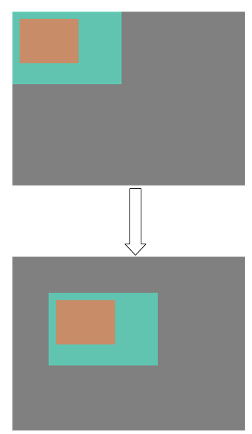
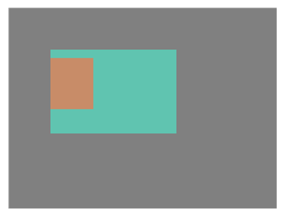

设计说明
luban-lite/packages/artinchip/lvgl-ui ├── aic_demo // aic lvgl demo ├── lv_driver // lvgl 显示和 2D 加速对接 ├── lvgl // lvgl 库 ├── aic_ui.c // aic demo 入口 ├── aic_ui.h // aic demo 头文件 ├── lv_conf.h // lvgl 配置文件 ├── lv_demo.c // lvgl demo 入口函数 └── SConscript
LVGL 整体流程
-
lv_tick_get()：获取以毫秒为单位的 tick 时间。
-
lv_timer_handler()：在 while 循环中的基于定时器的任务处理
函数 lv_task_handler() 会调用 lv_timer_handler()。lv_tick_get() 决定了 lv_timer_handler() 基于定时器的任务处理的时间的准确性。
uint32_t lv_tick_get(void)
{
#if LV_TICK_CUSTOM == 0
/*If `lv_tick_inc` is called from an interrupt while `sys_time` is read
*the result might be corrupted.
*This loop detects if `lv_tick_inc` was called while reading `sys_time`.
*If `tick_irq_flag` was cleared in `lv_tick_inc` try to read again
*until `tick_irq_flag` remains `1`.*/
uint32_t result;
do {
tick_irq_flag = 1;
result = sys_time;
} while(!tick_irq_flag); /*Continue until see a non interrupted cycle*/
return result;
#else
return LV_TICK_CUSTOM_SYS_TIME_EXPR;
#endif
}#define LV_TICK_CUSTOM 1 #define LV_TICK_CUSTOM_INCLUDE LV_RTTHREAD_INCLUDE #define LV_TICK_CUSTOM_SYS_TIME_EXPR (rt_tick_get_millisecond()) /*Expression evaluating to current system time in ms*/
static void lvgl_thread_entry(void *parameter)
{
#if LV_USE_LOG
lv_log_register_print_cb(lv_rt_log);
#endif /* LV_USE_LOG */
lv_init();
lv_port_disp_init();
lv_port_indev_init();
lv_user_gui_init();
/* handle the tasks of LVGL */
while(1)
{
lv_task_handler();
rt_thread_mdelay(SLEEP_PERIOD);
}
}
int lvgl_thread_init(void)
{
rt_err_t err;
err = rt_thread_init(&lvgl_thread, "LVGL", lvgl_thread_entry, RT_NULL,
&lvgl_thread_stack[0], sizeof(lvgl_thread_stack), LPKG_LVGL_THREAD_PRIO, 0);
if(err != RT_EOK)
{
LOG_E("Failed to create LVGL thread");
return -1;
}
rt_thread_startup(&lvgl_thread);
return 0;
}-
lv_port_disp_init()：实现显示接口的对接以及硬件 2D 加速的对接
-
lv_port_indev_init()：实现触摸屏的对接
-
lv_user_gui_init()：适配不同 UI 界面的初始化
LVGL 层次结构
-
Display：显示设备，是对显示驱动的封装和抽象。
-
Screen：屏幕对象，表示不同的界面。
-
Layer：图层，表示屏幕上的不同绘制区域。
-
一个 display 包含多个 screen，每个 screen 又包含多个 layer。layer 按照层级关系叠加在一起，形成最终的显示效果。具体来说：
-
Active Screen：当前活动的屏幕，承载主要的应用程序界面，是所有操作的主要界面，处于最底层。
一般在 Active Screen 实现不同的 app 界面，用户可以创建多个 screen，但只能有一个 screen 设置为 Active Screen
-
Top layer：位于 Active Screen 之上的图层，通常用来创建弹出窗口。
Top layer 永远在 Active Screen 之上。
-
System layer：位于最顶层，通常用于显示系统级别的信息，比如鼠标可以在 System layer，永远不会被遮挡
-
父子结构
- 每一个对象都包含一个父对象，screen 对象除外。
- 一个父对象可以包含任意数量的子对象。
- 创建对象时需要传入父对象的指针，如果父对象为 NULL，则表示创建的是 screen
对象。
lv_obj_create(NULL);
- 父对象和子对象一起移动。父子对象一起移动
图 4. 父子对象移动 - 子对象超出父对象部分不可见。
图 5. 子对象可见区域